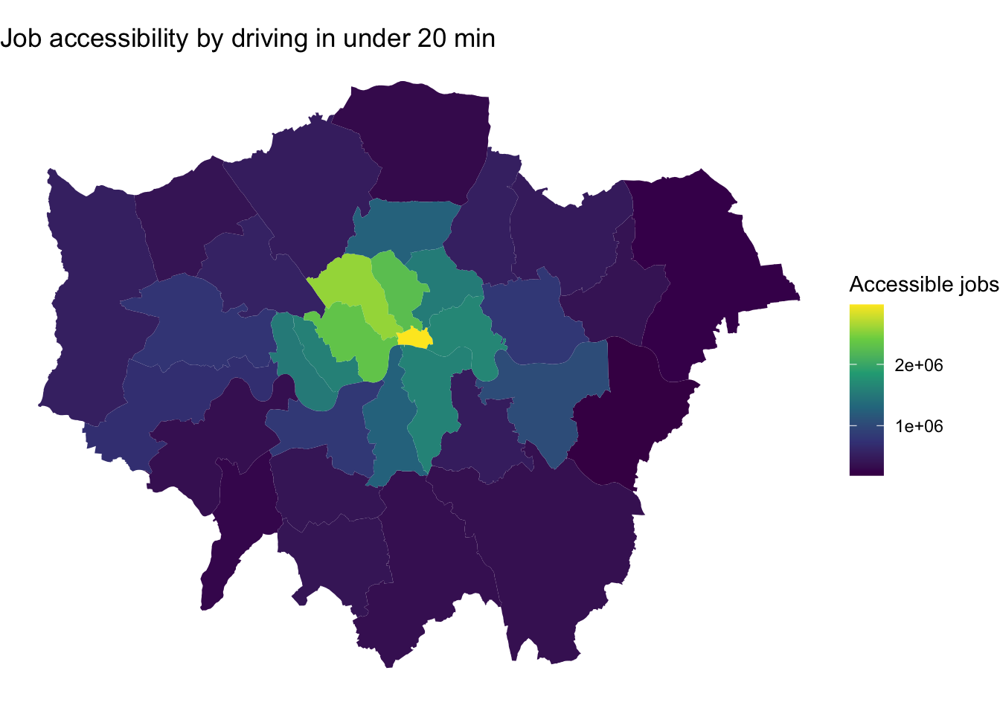

To run this pratical you need to have an RStudio project as discussed in the previous practical.
library(tidyverse)
Warning: package 'tidyverse' was built under R version 4.1.3
-- Attaching packages --------------------------------------- tidyverse 1.3.2 --
v ggplot2 3.3.6 v purrr 0.3.4
v tibble 3.1.8 v dplyr 1.0.9
v tidyr 1.2.0 v stringr 1.4.0
v readr 2.1.2 v forcats 0.5.1
Warning: package 'ggplot2' was built under R version 4.1.3
Warning: package 'tibble' was built under R version 4.1.3
Warning: package 'tidyr' was built under R version 4.1.3
Warning: package 'readr' was built under R version 4.1.3
Warning: package 'dplyr' was built under R version 4.1.3
-- Conflicts ------------------------------------------ tidyverse_conflicts() --
x dplyr::filter() masks stats::filter()
x dplyr::lag() masks stats::lag()
library(accessibility)
Warning: package 'accessibility' was built under R version 4.1.3
library(sf)
Warning: package 'sf' was built under R version 4.1.3
Linking to GEOS 3.10.2, GDAL 3.4.1, PROJ 7.2.1; sf_use_s2() is TRUE
library(kableExtra)
Attaching package: 'kableExtra'
The following object is masked from 'package:dplyr':
group_rows
library(rprojroot)
Warning: package 'rprojroot' was built under R version 4.1.3
library(osrm)
Warning: package 'osrm' was built under R version 4.1.3
The aim of this practical is to calculate different accessibility indicators. For a brief overview about accessibility, please have a look at (Rodrigue 2020) (for example here ). For a review have a look at Holl (2007), El-Geneidy and Levinson (2022) and Shi et al. (2020) as well as at some older and well cited papers such as Geurs and Van Wee (2004) and Bruinsma and Rietveld (1998). The below typology of accessibility concepts is from Holl (2007).
Network access
distance to access the network
travel opportunities
Travel cost measures
network access + distance/time travelled on the network
Market potential accessibility
destinations at greater distance provide diminishing opportunities
\(Acc_i = \sum_j\frac{W_j} {c_{ij}^a}\)
Among other R packages, the practical is based on the accessibility package. Some of the below materials are based on the package’s vignette.
Let’s start with using the toy data that comes with the accessibility package. As you can see below, the data comes in R’s native data format called .Rds and, therefore, we use the relevant function to read it – readRDS().
The first data object we are using is the travel time matrix between all potential origins and destinations in city of Belo Horizonte, Brazil. As you can see, the matrix is stored in a long format and not as an \(n*n\) matrix. If you check the dimension of that object you will understand what I mean (dim(travel_matrix)).
The first accessibility function we are using is cost_to_closest(). As per its name, it calculates the minimum travel cost to the closest n number of opportunities. In our example, as travel cost we understand the travel time between origins and destinations included in the column travel_time from the travel_matrix object. We are only interested in the closest (n=1) opportunity, which in this example is a school.
The next measure is the total number of opportunities (in other words cummulative opportunities) within a cut-off of the travel cost. In other words, the below provides the nu,ber of jobs accessibile within 30 minutes of travel time.
If the above was a form of active accessibility – that is how many opportunities one can access from their location – the below offers a passive form of accessibility – that is how many individuals can be reached from each destination within a cuttof. The latter is based on travel_time in the below.
Last, but not least we can calculate the gravity based accessibility indicators, or, in other words, potential accessibility indicators. This is the same measure as the example we discussed during the class. The intuition is that the furthest away each opportunity is, the less important it becomes. So, the accessibility of a location \(i\) is equal to the sum of all opportunities available divided – in other words discounted – by the distance or the cost to reach them. The negative_exp function can take different decay functions (see here). We know from previous studies that the exponential function represents better shorter interactions (e.g. within cities) while the power function works better for longer distance interactions (e.g. migrations flows) Oshan (2021).
And now we can plot these metrics. The grid object is a toy spatial dataset of the places we calculate the above accessibility indicators. We first load these spatial data, merge them with the acessibility indicator we want to plot and then we plot these data.
grid <-system.file("extdata/grid_bho.rds", package ="accessibility")grid <-readRDS(grid)spatial_data <-merge(grid, cum_cutoff, by ="id")ggplot() +geom_sf(data = spatial_data, aes(fill = jobs), color =NA) +labs(title ="Job accessibility by transit in under 30 min.",fill ="Accessible jobs" ) +scale_fill_viridis_c() +theme_void()
London example
All the above were based on the data that came together with the accessibility package. Let’s repeat this exercise using some real world data from data.london.gov.uk. Jobs and population per Local Authority represent the opportunities.
jobs <-read_csv("https://data.london.gov.uk/download/jobs-and-job-density-borough/79e85749-e38d-4bb6-8327-c60c6be27222/Jobs_and_Job_Density.csv") %>%filter(year ==2020) %>%# I am only using 2020 data. Remove this line # to see what will happen to the data.glimpse()pop <-read_csv("https://data.london.gov.uk/download/land-area-and-population-density-ward-and-borough/77e9257d-ad9d-47aa-aeed-59a00741f301/housing-density-borough.csv") %>%filter(Year ==2020) %>%# This is a projection, but it will work for nowglimpse()
Jobs and pop include observations for spatial units other than London’s 33 Local Authorities. Explore pop and jobs to see that. Therefore, we use the inner_join() function to join them. See here how it works. You should be able to understand the different functions to join data.
df <-inner_join(jobs, pop, by =c("code"="Code")) %>%filter(area !="London") %>%rename(id = code)
To produce a nicer looking table I am using here the kableExtra package. It just adds some nice styling for html outputs.
Next, we are bringing the spatial data – that is the polygons – for London’s Local Authorities. We start by downloading all the polygons for all Local Authorities in the country. Please go to this webpage, download the geojson file and save it to the appropriate data folder within your project directory.
However, we don’t need all the Local Authorities, but instead we only need to ones within London. Therefore we use the filter option to select only the Local Authorities which are included within – this is the %in% operator – the df$id column. Finally, we create a new object which only includes the centroids of these polygos? Why are we doing this? Because we need to calculate distances and accessibilities metrics for specific points and we will use these points as representative for each Local Authority.
Now we need to actually calculate the distance matrix. We are going to use a real world road network to perform what is known as routing. There is a great discussion about routing and before you move forward I would encourage you to read the relevant section from Lovelace, Nowosad, and Muenchow (2019), which can be found here.
We are using the osmr package which can do routing for us. The details of the osrm package can be founf here.
The below code creates a distance table between all the london.centres. We are interested in distance measured as time – i.e. duration – by car. The osrm package offers other options too.
The output of the above is a list with an \(n*n\) distance matrix, and a dataframe with the longitude and latitude of the origins and destinations. We are mostly interested in the former, so we start the data wrangling by creating a help dataframe with these distances, or in other words, durations. We then add row and column names using the london.centres names. We can just do that because the matrix follows the same order as the intital spatial data of Local Authorities. I always like to throw in a dim function just to keep an eye on the dimensions of the objects I create. Indeed, the dist object is a \(33*33\) matrix as it should have been.
Then, I use the function odmatrix_to_od() form the od package. Why? Because we need to convert the \(n*n\) matrix to a long format. If you remember, we used to call this format an edge list.
london <-merge(london, mtc, by.x ="LAD21CD", by.y ="id" )ggplot() +geom_sf(data = london, aes(fill = number_of_jobs), color =NA) +labs(title ="Job accessibility by driving in under 20 min.",fill ="Accessible jobs" ) +scale_fill_viridis_c() +theme_void()

Tip
Can you calculate and plot other accessibility metrics for London?
Tip
What do we miss by focusing on London’ accessibility?
References
Bruinsma, Frank, and Pieter Rietveld. 1998. “The Accessibility of European Cities: Theoretical Framework and Comparison of Approaches.”Environment and Planning A 30 (3): 499–521.
El-Geneidy, Ahmed, and David Levinson. 2022. “Making Accessibility Work in Practice.”Transport Reviews 42 (2): 129–33.
Fotheringham, A Stewart, and Morton E O’Kelly. 1989. Spatial Interaction Models: Formulations and Applications. Vol. 1. Kluwer Academic Publishers Dordrecht.
Geurs, Karst T, and Bert Van Wee. 2004. “Accessibility Evaluation of Land-Use and Transport Strategies: Review and Research Directions.”Journal of Transport Geography 12 (2): 127–40.
Holl, Adelheid. 2007. “Twenty Years of Accessibility Improvements. The Case of the Spanish Motorway Building Programme.”Journal of Transport Geography 15 (4): 286–97. https://doi.org/https://doi.org/10.1016/j.jtrangeo.2006.09.003.
Lovelace, Robin, Jakub Nowosad, and Jannes Muenchow. 2019. Geocomputation with r. Chapman; Hall/CRC.
Oshan, Taylor M. 2021. “The Spatial Structure Debate in Spatial Interaction Modeling: 50 Years On.”Progress in Human Geography 45 (5): 925–50.
Shi, Yuji, Simon Blainey, Chao Sun, and Peng Jing. 2020. “A Literature Review on Accessibility Using Bibliometric Analysis Techniques.”Journal of Transport Geography 87: 102810.